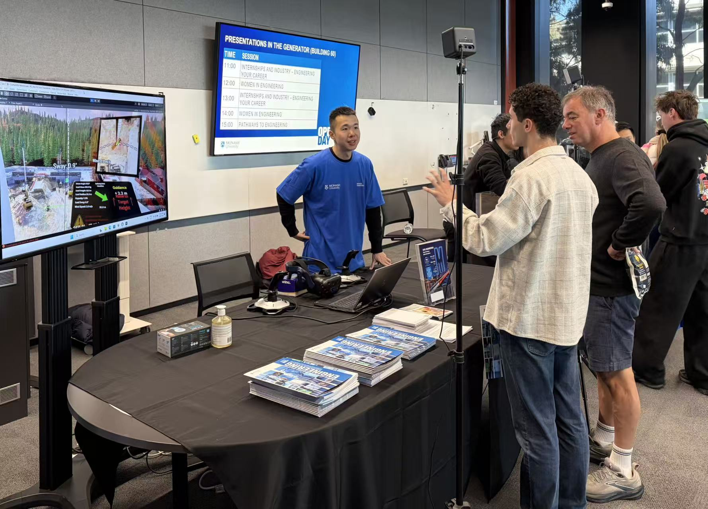
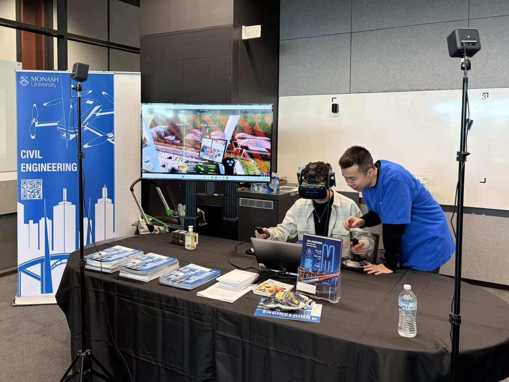

On Sunday 2 August 2026, ICON Lab joined Monash University’s Clayton Open Day (10:00–16:00) to welcome prospective students and their families to the engineering precinct. Throughout the day, our team demonstrated the lab’s high-fidelity crane lift simulator and spoke with visitors about research and study pathways in civil and environmental engineering, construction automation, and human–machine interaction.

The simulator is built from a real construction site: the site was scanned with drones and reconstructed in Unity to create an immersive virtual environment. Visitors could step into the role of a crane operator and control the lift with a joystick that mimics real operating conditions. The simulation also incorporates environmental factors such as wind and weather, helping participants experience how site conditions shape crane operations in practice.

This demonstration builds on ICON Lab’s ongoing research into simulation fidelity, hazard identification, and immersive training for crane lift operations. Related publications include:
- Goh, J., Fang, Y., & Ens, B. (2025). Embedded visualizations in crane operation user interfaces for real-time assistance. Automation in Construction, 173, 106078. https://doi.org/10.1016/j.autcon.2025.106078
- Jiang, T., Fang, Y., Goh, J., & Hu, S. (2024). Impact of simulation fidelity on identifying swing-over hazards in virtual environments for novice crane operators. Automation in Construction, 165, 105580. https://doi.org/10.1016/j.autcon.2024.105580
We thank everyone who contributed to the Open Day demonstration, including Dr Yizhe Wang and the ICON Lab team, as well as A/Prof Yihai Fang for his guidance and support. We also acknowledge the foundational work of Dr Tanghan Jiang and Dr Jian Tsen Goh (Jensen) on the crane simulation research that made this showcase possible.
We look forward to welcoming many of the students we met on Open Day back to Monash Engineering.